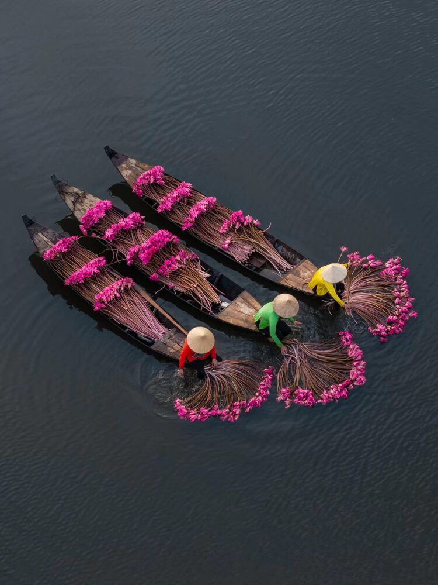
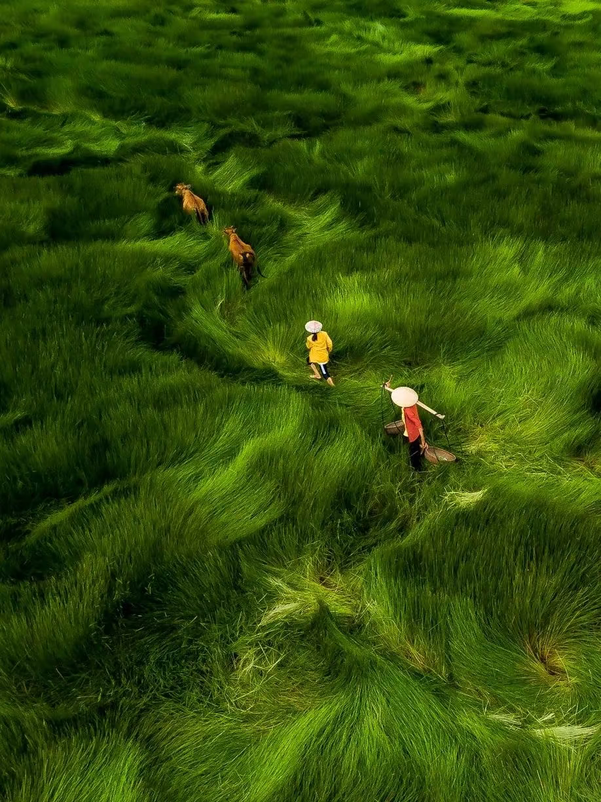

一曲一方水土
静候一曲相逢
选择左侧曲目，展开它的故事。
曲目介绍
这里收录了六首广为传唱的歌曲。每一首旋律，都连着不同的地方与生活经验。
历史背景
点选曲目后，这里展示其流传背景，并区分民间传承与近现代创作。
文化故事
从川西情歌到川东啰儿调，听见四川山歌背后的人情与风物。
穿过山河的回声，选一扇门，继续你的音乐旅程。

LISTEN & DISCOVER音乐预览听一曲山歌，读一方故事。
展开唱片，走近旋律的来处。

CHOOSE & ENCOUNTER音乐组合选几件乐器，组合一份心意。
让下一段旋律，与你相逢。
从一首歌走近一段故事。点选曲目，聆听旋律，读懂它的来处。
曲库为四川山歌主题的历史人声演唱录音选段，录音来源与版权说明见 README.txt。
选择左侧曲目，展开它的故事。
这里收录了六首广为传唱的歌曲。每一首旋律，都连着不同的地方与生活经验。
点选曲目后，这里展示其流传背景，并区分民间传承与近现代创作。
从川西情歌到川东啰儿调，听见四川山歌背后的人情与风物。
还想试试另一种心意？
读过故事，也可用几件乐器组合你的心意。
一器一曲，一山一水。
选几件乐器，组合一份心意。
再按下聆听，遇见属于此刻的旋律。
选取乐器，再揭晓旋律 · 移动鼠标，照见山河